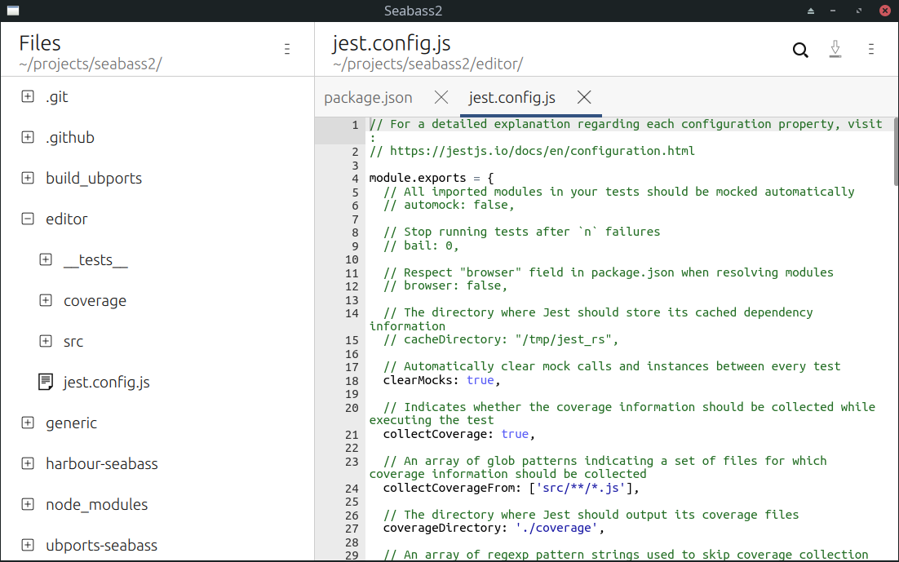

Hi, i'm Mikhail, web developer and software engineer with 9+ years of experience from Kaliningrad, Russia.
I love web and passionate about building reliable and maintainable software, but I also know the value of prioritizing business and customers over technologies.
I've worked on both large scale projects, such as enterprise web-based GIS, and small projects, such as corporate web-services and reporting systems.
Keen on learning new staff and sharing my knowledge. 4+ years of teaching and lecturing (“Software architecture”, “Enterprise architecture” and “Operation systems” courses) at the Tomsk State University of Control Systems and Radioelectronics (TUSUR).
20+ scientific publications, including those indexed by Scopus and Web of Science. Co-authored the “software engineering” course for students of “Engineer in data processing automation and management systems” specialty at TUSUR.
March 2020 – Now
I've been working on a corporate web service for generating reports on employees' workload based on a data from 3rd party service. The service provides employees with a role-based access to real-time data in different reports.
I'm responsible for:
Achievements:
Specialties:
December 2017 – March 2020
Web developer in an outsourced team. We built web services for image labeling and generating training sets for Machine Learning tasks. We processed 10+ terabytes of data and in the peak load our web services handle up to 1200 messages per second.
I was responsible for:
Achievements:
Specialties:
September 2013 – December 2017
Our team developed enterprise web-GIS software. I was a lead in a team with up to 8 co-workers.
I was responsible for:
Achievements:
Specialties:
June 2012 – December 2017
Developed corporate websites. Met with customers and managed product requirements. Worked on wireframes. Managed team of up to 5 co-workers.
Specialties:
September 2011 – September 2013
Worked on enterprise web-GIS systems. Developed new modules for existing software products. Wrote technical documentation.
Specialties:
I develop the Seabass code editor – one of the most popular applications for Ubuntu Touch.

Specialties: